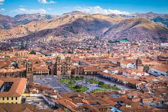
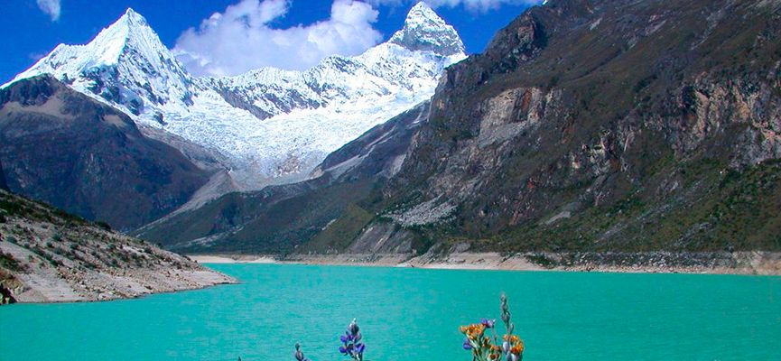

Los Lugares Más Famosos de Perú
El Perú es un país que tiene muchos lugares interesantes y famosos para visitar. No sólo por su mezcla de culturas, sino también por el ambiente y terreno en que está situado.
Entre los lugares más famosos del Perú se encuentran las ruinas de Machu Picchu. Estas ruinas son lo queda de lo que alguna vez fue una gran ciudad del imperio Inca en Perú. Estas ruinas están localizadas en una montaña, a 2,600 metros sobre el nivel del mar.

Otro de los lugares más famosos de Perú es la antigua ciudad del Cuzco. Esta ciudad fue construida por el imperio Inca antes de la conquista española del continente. Como dato histórico importante, esta ciudad era la capital del imperio Inca
Además de estas maravillas culturales y arquitectónicas, es importante apreciar la naturaleza en Perú. El bosque del Amazonas y el río de Amazonas se extiende hasta Perú. Uno de los sitios más interesantes para visitar en Perú se encuentra dentro de este inmenso bosque. Este sitio se llama Catarata de Gocta, y es una de las cataratas más altas del mundo. Además de este dato, es un área muy bella por la cantidad de vegetación que tiene a su alrededor.

Otro sitio famoso para visitar en Perú es la Laguna de Llanganuco. Consiste de dos lagunas que son productos del derretimiento del hielo y de la nieve de las montañas Huascarán, Yanapaccha, Chopicalqui, Pisco y Huandoy. Las aguas de esta laguna son muy famosas por el color celeste que tienen. Se localiza en un valle glaciar.
Por último, un sitio muy interesante para visitar es la ciudad de Chiclayo. Esta ciudad es hogar de muchos curanderos y chamánes peruanos. Los mercados de esta ciudad venden productos e ingredientes para la confección de pociones. Debido a todo esto, se le conoce como la "Ciudad de los Brujos".